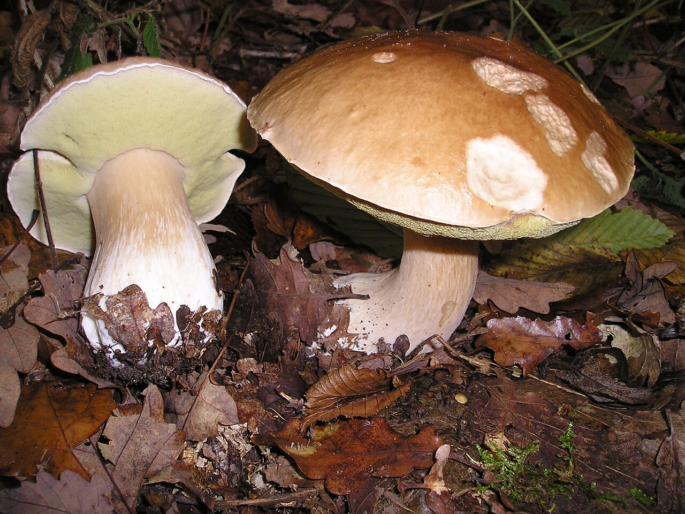
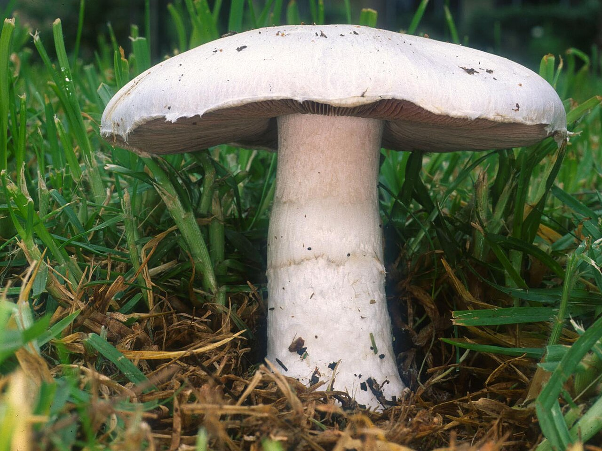
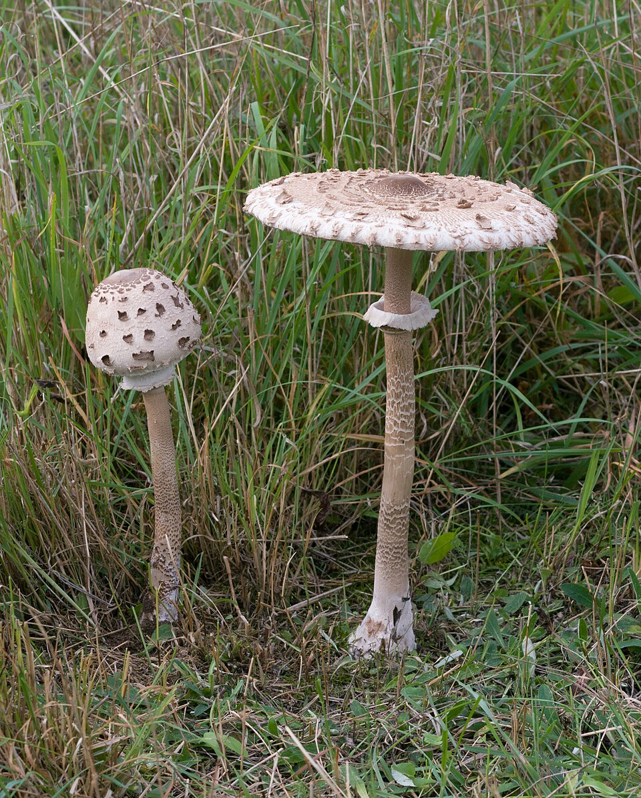
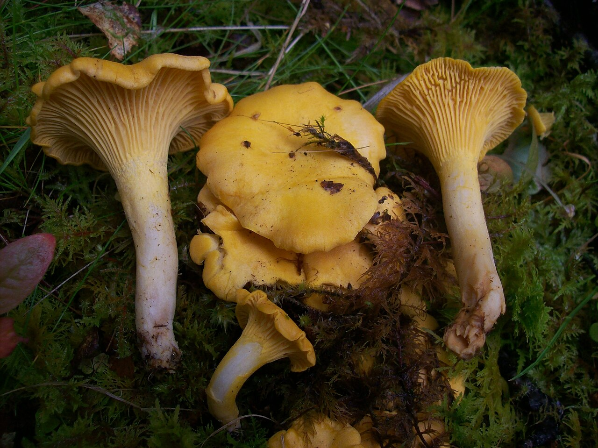
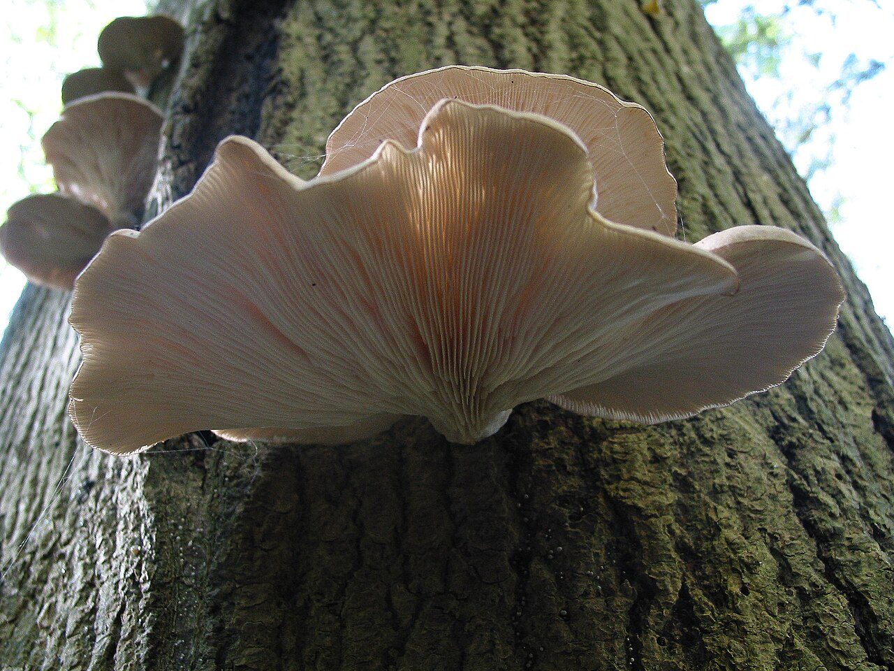
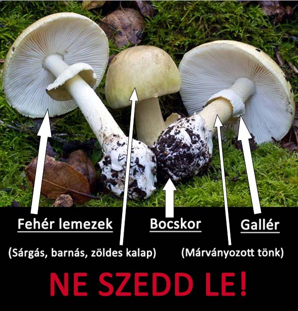
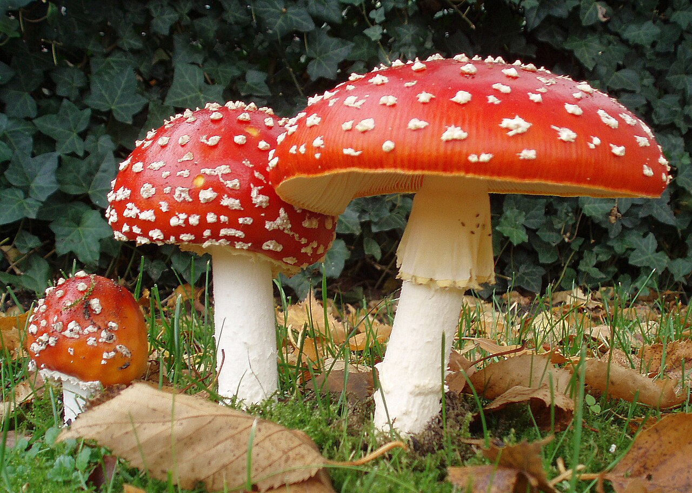
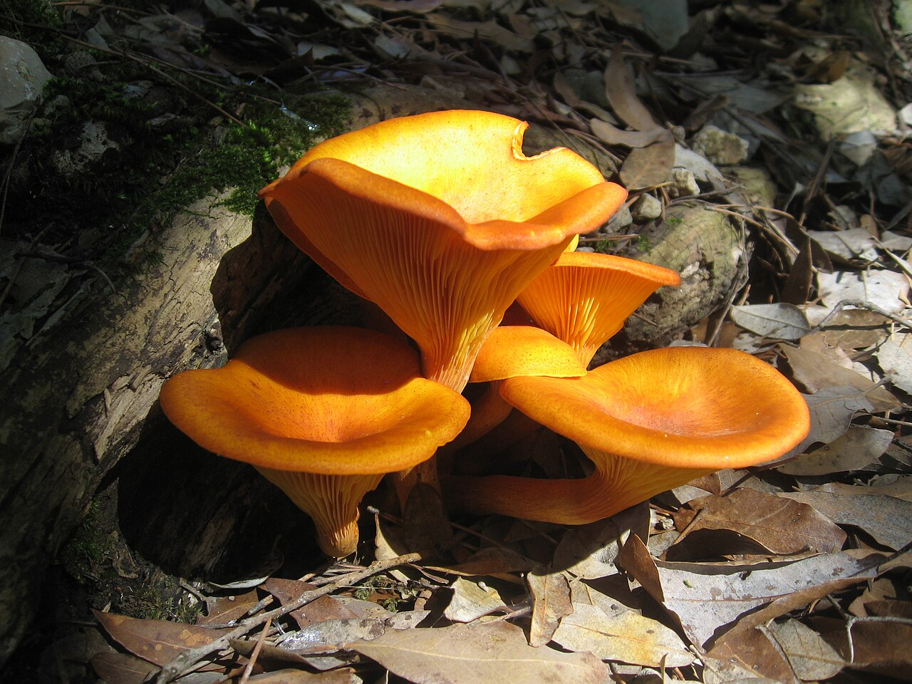
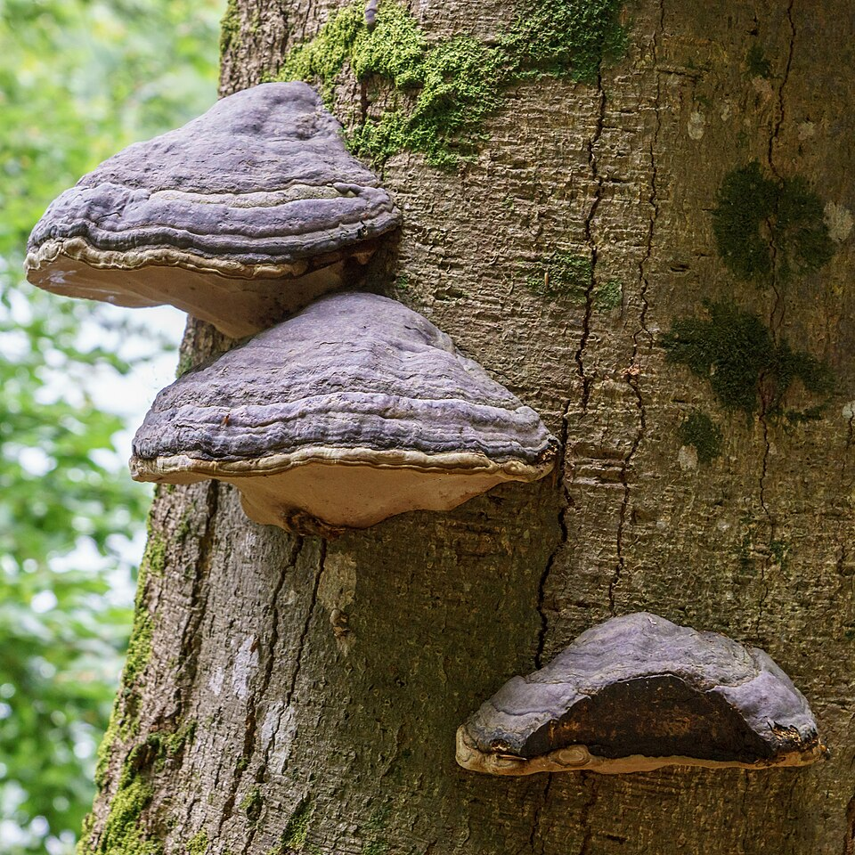

🍄 A Gombák Titokzatos Világa
4. osztályos interaktív felfedező előadás és tudáspróba
2. Fejezet • Terepi fajismeret és ökológia
Kiváló ehető
Ehető • Gyakori
Kiváló ehető
Ehető • Illatos
Ehető • Fa lakója
HALÁLOSAN MÉRGEZŐ!
Mérgező • Mesebeli
Mérgező • Trükkös
Taplógomba • Nem ehető
 Taplógomba • Gyógyhatású
Taplógomba • Gyógyhatású
Gombák a természetben: Hol élnek és mi a feladatuk?
Az erdőkben találkozhatunk a talajon növő kalapos gombákkal és a fák törzsén élő kemény taplógombákkal. Minden fajnak megvan a maga lakóhelye, kedvenc növénypartnere és fontos feladata.

🍄KÉPHELY: Ízletes vargányaFotó helye
1. Ízletes vargánya
- Hol él? Lomberdőkben és fenyvesekben, savanyúbb talajon.
- Mely növénnyel? Bükkel, tölggyel, gyertyánnal és lucfenyővel.
- Mi a szerepe? Mikorrhiza partner – vízzel és ásványi anyagokkal látja el a fákat.

🍄KÉPHELY: Mezei csiperkeFotó helye
2. Mezei csiperke
- Hol él? Nyílt réteken, legelőkön, parkokban (nem erdőben!).
- Mely növénnyel? Réti fűfélékkel, lágyszárú növények között.
- Mi a szerepe? Talajlakó lebontó – az elhalt fűszálakból és szerves anyagokból készít humuszt.

🍄KÉPHELY: Nagy őzlábgombaFotó helye
3. Nagy őzlábgomba
- Hol él? Erdőszéleken, tisztásokon, ligeterdőkben.
- Mely növénnyel? Tölgyesek, akácosok és fenyvesek szegélyében, fűfélék között.
- Mi a szerepe? Avarlebontó – a lehullott leveleket és ágacskákat bontja vissza tápanyaggá.

🍄KÉPHELY: Sárga rókagombaFotó helye
4. Sárga rókagomba
- Hol él? Mohás, nyirkosabb lomb- és fenyőerdőkben.
- Mely növénnyel? Bükkel, tölggyel, szelídgesztenyével és fenyőkkel.
- Mi a szerepe? Mikorrhiza partner – segíti a fák gyökereinek tápanyagfelvételét.

🍄KÉPHELY: Késői laskagombaFotó helye
5. Késői laskagomba
- Hol él? Ártéri erdőkben, idős lombos fák törzsén (ősszel-télen).
- Mely növénnyel? Nyárfával, fűzfával, bükkel és diófával.
- Mi a szerepe? Faanyag-lebontó – az elhalt fatörzsek kemény faanyagát bontja le.

☠️KÉPHELY: Gyilkos galócaFotó helye
6. Gyilkos galóca
- Hol él? Melegebb lomberdőkben, parkokban (nyártól őszig).
- Mely növénnyel? Leggyakrabban tölggyel, gyertyánnal és bükkel.
- Mi a szerepe? Mikorrhiza partner – a fáknak hasznos segítője, de az emberre halálos!

⚠️KÉPHELY: Légyölő galócaFotó helye
7. Légyölő galóca
- Hol él? Hűvösebb, savanyú talajú erdőkben.
- Mely növénnyel? Nyírfával és lucfenyővel alkot szoros párost.
- Mi a szerepe? Mikorrhiza partner – táplálja a nyírfákat és fenyőket.

⚠️KÉPHELY: Világító tölcsérgombaFotó helye
8. Világító tölcsérgomba
- Hol él? Meleg tölgyesekben, fák tövében csoportosan.
- Mely növénnyel? Tölgyfák és szelídgesztenyék elhalt gyökerein, tuskóin.
- Mi a szerepe? Faanyag-lebontó – az elöregedett gyökereket bontja vissza a talajba.

🪵KÉPHELY: BükkfataplóFotó helye
9. Bükkfatapló
- Hol él? Idős hegyvidéki és dombvidéki erdőkben, magasan a törzseken.
- Mely növénnyel? Leginkább meggyengült vagy elhalt bükkfákkal (néha nyírrel).
- Mi a szerepe? Kiváló faanyag-lebontó – lebontja a kemény lignint, odút készítve a harkályoknak!
🪵KÉPHELY: PecsétviaszgombaFotó helye
10. Pecsétviaszgomba
- Hol él? Meleg lomberdőkben, tuskók tövében.
- Mely növénnyel? Tölgyfák és más keményfák elhalt gyökerein.
- Mi a szerepe? Faanyag-lebontó – eltünteti az elhalt fatuskókat az erdőből.